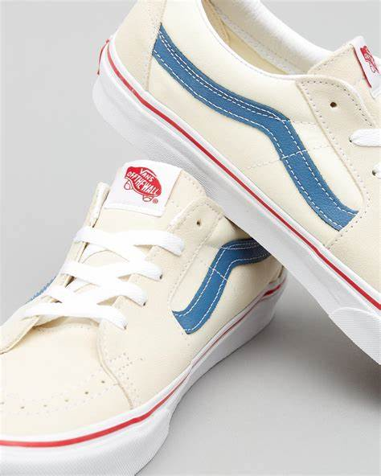
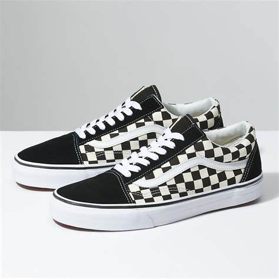

En 1966, los hermanos Paul y Jim Van Doren, junto con sus socios Gordon Lee y |
 |
En los años 70, todos los skaters del sur de California paseaban estas
zapatillas. Poco a poco, van surgiendo nuevos modelos con pequeñas
modificaciones, que van haciéndose conocer y, así, ampliando el grupo de
fanáticos de la marca. Crean modelos para basket, béisbol, fútbol americano y
lucha libre profesional, adecuándolas a cada deporte.
|  | Ya para los años 90 alcanzan su auge, que también las inserta en la escena del |
| Modelo | Color | Precio |
|---|---|---|
| Tenis Vans Old Skool VN000D3HY28 |
Negro,blanco | $899 |
| Tenis Vans Old Skool VN0A3WKT4FW |
Negro, rosa, blanco | $1,299 |
| Modelo | Color | Precio |
|---|---|---|
| Tenis Vans Sk8-Hi VN000D5INVY |
Negro, azul, blanco | $1,399 |
| Tenis Vans Sk8-Hi VN000D5IB8C |
Negro, blanco | $999 |